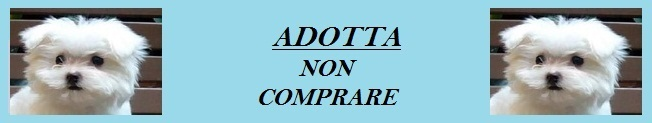

Il progetto attuale: Adopt Not Buy
Adopt Not Buy e' un progetto sviluppato a partire dall'anno 2016 al quale aderiscono tutti i canili nella zona del veneto ed ha lo scopo di informare e sensibilizzare i futuri adottanti sull'importanza di adottare un cane, direttamente oppure a distanza, e NON di acquistarlo.
Infatti, attraverso l'acquisto, si rischiano molti effetti negativi:
- alimentare il traffico di un mercato illegale che purtroppo è in continua espansione;
- mancanza di controllo sulle condizioni di salute;
- è dimostrato statisticamente che chi compra un animale con buona probabilità lo abbandonerà in breve tempo;
- comprare un cane implica non adottarne uno, quindi non sottrarlo alla “noiosa” quotidiana vita del canile.
Grazie alla benevolenza di molti nuovi padroni che hanno deciso di adottare dal nostro canile, siamo riusciti in meno di dieci anni a dimezzare il numero di ospiti, a beneficio dei rimanenti che oggi possono godere di piu spazi per la propria cuccia box e per i giochi quotidiani.
Vai alla pagina delle adozioni